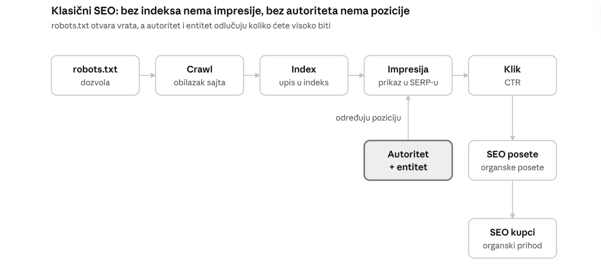
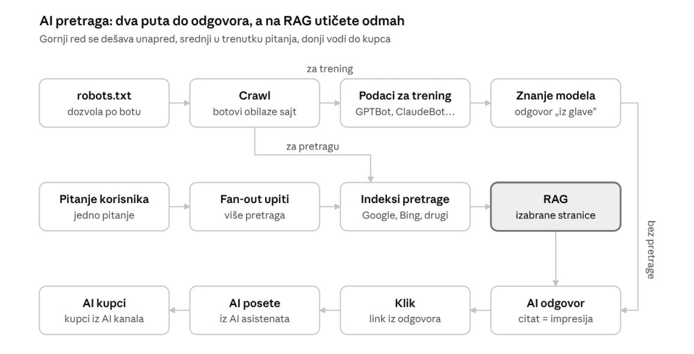

U ovom tekstu
Kada neko ukuca „kuhinje po meri Novi Sad”, Google mu može prikazati listu sajtova koje vredi otvoriti. Kada pita „Kako da uporedim ponude za kuhinju po meri u Novom Sadu i šta da proverim pre nego što naručim?”, AI pretraga može da sastavi odgovor iz više izvora. Jedan sajt može da objasni šta ulazi u cenu, drugi kako se biraju materijali, a treći šta podrazumeva montaža. Vaša stranica može da bude izvor za jedan od tih delova.
Tu je praktična razlika između klasičnog SEO-a i AI SEO-a. U klasičnoj pretrazi borite se za to da korisnik među rezultatima primeti i otvori vašu stranicu. U AI pretrazi vaša stranica može da dobije vidljivost kao izvor za konkretnu tvrdnju u odgovoru. U oba slučaja posao počinje time da sistem može da pronađe i pročita sadržaj. Za citiranje dodatno je važno da na stranici postoji nešto što vredi izdvojiti i potkrepiti linkom.
Kako klasični SEO vodi od stranice do kupca
Prvi dijagram prati put od pristupa stranici do poslovnog rezultata. Korisnik vidi samo njegov završni deo. Pre nego što se link pojavi u rezultatima, Google mora da zna da stranica postoji i da proceni može li da je prikaže za dati upit.

robots.txt definiše kojim delovima sajta određeni crawler sme da pristupi. Kada Googlebot otvori stranicu, Google može da obradi glavni sadržaj stranice i odluči da li će je uvrstiti u indeks. Kada korisnik nešto traži, sistem bira koje će rezultate prikazati i kojim redosledom. Svaki korak ima svoju ulogu. Dozvola za obilazak pruža mogućnost da crawler pročita sadržaj, dok upis u indeks omogućava da sadržaj bude razmatran za prikaz. Adresa stranice blokirane u robots.txt ponekad ipak može da se pojavi kao URL ako je Google otkrije preko drugih stranica.
Izvor: Googleovi tehnički uslovi za pretragu
„Autoritet + entitet” u dijagramu je skraćen prikaz dela priče o rangiranju. Pod entitetom ovde mislimo na prepoznatljivu firmu, osobu ili proizvod. Sajt firme treba jasno da odgovori na pitanja ko pruža uslugu, šta tačno radi i gde posluje. Pod autoritetom mislimo na razloge zbog kojih bi ljudi verovali da taj izvor poznaje temu. To mogu biti dokumentovani radovi, transparentno autorstvo i relevantne reference sa drugih sajtova. Pozicija zavisi i od upita, relevantnosti stranice i drugih signala. Vodič kroz materijale za kuhinje može dobro da odgovori na informativni upit, dok stranica sa uslugom, lokacijom i primerima radova bolje odgovara osobi koja traži izvođača u svom gradu.
Izvor: Kako radi Google pretraga
Kada se rezultat prikaže, dobijate impresiju. Kada ga korisnik otvori, dobijate klik. CTR je udeo impresija koje su dovele do klika. Poseta tek posle toga može dovesti do poziva, upita ili kupovine. Ako posete porastu zbog članka koji privlači ljude iz cele zemlje, dok firma radi u jednom gradu, broj relevantnih upita može da ostane isti. Zato impresije i klikovi pomažu da vidite gde se put do kupca prekida, a upiti i prodaja pokazuju kakav je njegov poslovni ishod.
Kako AI pretraga dolazi do citata
Drugi dijagram prikazuje dve moguće putanje do odgovora. Gornji red predstavlja ono što se dešava pre pitanja, kroz obuku modela. Srednji red predstavlja pretragu i izbor izvora pri sastavljanju odgovora. Donji red pokazuje šta se može dogoditi kada korisnik dobije odgovor sa linkom.

Znanje iz treninga i izvori pronađeni tokom odgovora
Trening se odvija unapred. Model iz podataka uči obrasce koje koristi pri generisanju teksta. Može da odgovori na osnovu tako stečenog znanja, bez nove pretrage. Ako pritom pomene firmu, samo pominjanje ne otkriva odakle informacija potiče. Za vlasnika sajta korisnije je da proveri da li odgovor prikazuje link do njegove stranice i uz koju ga tvrdnju prikazuje.
RAG je skraćenica za retrieval-augmented generation, odnosno generisanje odgovora uz pronalaženje relevantnog sadržaja. U kontekstu AI pretrage to znači da sistem može da pronađe stranice, upotrebi delove njihovog sadržaja u odgovoru i uz odgovor prikaže izvore. Indeks pomaže sistemu da pronađe kandidate, a odabrani sadržaj daje modelu materijal za konkretno pitanje. Google opisuje takav postupak za svoje generativne funkcije u pretrazi. ChatGPT može da pretraži veb i u odgovoru prikaže citate ili listu izvora. Tačan izbor izvora zavisi od platforme i upita.
Izvor: Googleov vodič za generativnu pretragu · Kako ChatGPT pretražuje veb
Kako jedno pitanje postaje više pretraga
Google navodi da AI Overviews i AI Mode mogu da koriste query fan-out. Sistem za jedno pitanje pokreće više povezanih pretraga kako bi prikupio materijal o različitim delovima teme. To je jedan od načina da dođe do izvora prikazanih uz odgovor.
Izvor: Googleova dokumentacija o AI funkcijama u pretrazi
Vratimo se osobi koja poredi ponude za kuhinju. Da bi joj odgovorio, sistem može da potraži šta obično ulazi u ponudu, kakva je razlika između materijala za frontove i ko u Novom Sadu radi merenje i montažu. Ako vaš vodič jasno objašnjava kako da kupac proveri da li su u ponudu uračunati okov i montaža, može da posluži kao izvor baš za taj deo odgovora. Zbog toga vredi pogledati i pitanja koja kupac postavlja između prvog interesovanja i slanja upita. Ona često otkrivaju informacije koje nedostaju na stranici usluge.
U dijagramu izraz „citat = impresija” označava sličnost u ulozi. Kao što prikaz rezultata izlaže vašu stranicu korisniku, citat može da je učini vidljivom unutar odgovora. U praksi razlikujte tri ishoda. Asistent može samo da pomene firmu, može da linkuje do vašeg sajta kao izvora ili može da doprinese poseti ako korisnik otvori link. Ako asistent preporuči firmu i citira lokalni portal, firma dobija vidljivost, a portal dobija citat.
Šta možete da uradite na svom sajtu
Proverite pristup po platformi
Za prikaz kao prateći link u Google AI Overviews ili AI Mode stranica mora da bude indeksirana i podobna za prikaz u Google pretrazi sa isečkom teksta, odnosno snippetom. Pristup za Google pretragu kontroliše se pravilima za Googlebot. Google-Extended služi za druge Googleove generativne sisteme i njegova dozvola nije uslov za AI Mode. OpenAI odvojeno definiše OAI-SearchBot za ChatGPT pretragu i GPTBot za sadržaj koji može da se koristi za trening. Možete da dozvolite prvi i ograničite drugi.
Izvor: Google AI funkcije i sajtovi · Googleovi crawler-i i direktive · OpenAI crawler-i
Krenite od nekoliko stranica koje donose posao. U Search Console proverite status URL-a i da li Google vidi ključni tekst. Pregledajte noindex, kanonski URL i pravila koja utiču na prikaz isečka. Zatim proverite da li CDN ili zaštita sajta vraćaju blokadu botu koji vam je važan. Na kraju pratite interne linkove od početne stranice ili kategorije do tih URL-ova. Na primer, vodič o ceni kuhinje vredi povezati sa stranicom usluge i relevantnim primerima radova. Tako i korisnik dobija jasan put od pitanja o ceni do odluke da zatraži ponudu.
Izvor: Tehničke preporuke Google Search Central-a
Objavite podatke iz sopstvenog rada
Firmi koja izrađuje kuhinje dobar materijal za članak već postoji u stvarnim ponudama i razgovorima s kupcima. Vodič može da objasni šta utiče na cenu, za koje stavke kupci često naknadno saznaju i kako da uporede dve ponude s različitim okovom ili uređajima. Uz primer raspona cene navedite kada je procena rađena, šta je bilo uključeno i od čega zavisi odstupanje. Tako čitalac dobija podatak koji može da primeni na svoju situaciju.
Za veb-šop to može da bude tabela kompatibilnosti, poređenje dimenzija na osnovu sopstvenog merenja ili objašnjenje razlika između dva slična modela. Ako objavljujete test, navedite kako ste ga sproveli. Ako koristite tuđe podatke, linkujte do izvora. Najvažnije činjenice stavite u vidljiv tekst ili čitljivu tabelu. Kratak odgovor na početku odeljka pomaže čitaocu da pronađe konkretan podatak, a objašnjenje odmah ispod daje mu uslove pod kojima taj podatak važi.
Različita pitanja zaslužuju različite stranice. „Koji su materijali za frontove?” je informativno pitanje i prirodno pripada vodiču. „Koliko košta kuhinja po meri sa montažom?” pomaže kupcu da uži izbor pretvori u odluku, pa uz odgovor ima smisla dati primer ponude i link ka usluzi. „Kako da zakažem merenje?” treba da ima jasan odgovor na samoj stranici usluge. Informativan sadržaj može da bude važan kada vodi do sledećeg pitanja koje kupac stvarno postavlja. U praksi to znači da vodič treba povezati sa odgovarajućom ponudom, a stranicu usluge dopuniti konkretnim informacijama koje ljude sprečavaju da pošalju upit.
Učinite firmu i njeno iskustvo proverljivim
Na stranici usluge jasno predstavite područje rada, ko izvodi posao i šta klijent dobija. Kod lokalnog poslovanja uskladite osnovne podatke na sajtu i u Google Business Profile-u. Prikaz stvarnog projekta može da pokaže stručnost ako uz fotografije objasni ograničenja prostora, izbor materijala i rešenje koje je primenjeno. Isto važi za spominjanja na drugim sajtovima. Na primer, kada lokalni medij piše o renoviranju stanova, svojoj publici može da koristi objašnjenje lokalnog izvođača o tome kako da prepozna nepotpunu ponudu.
Ovakvi primeri i reference imaju smisla i kad nijedan AI odgovor ne linkuje do njih. Kupcu daju način da proveri tvrdnje firme pre nego što je kontaktira. Google za AI Overviews i AI Mode navodi standardne uslove Google pretrage. Registracija žiga i posebna schema oznaka za AI nisu među tim uslovima.
Izvor: Googleovi uslovi za prikaz u AI funkcijama
Pročitajte stranicu koju AI već citira
Ako za važno pitanje dobijate odgovor o svojoj usluzi, otvorite citirane stranice i pogledajte koju činjenicu svaka potkrepljuje. Možda vaš sajt navodi da izrađujete kuhinje po meri, a citirani vodič precizno razlaže cenu na izradu, isporuku i montažu. Tada znate koji deo informacije na vašem sajtu treba dopuniti. Ako je vaš sajt već citiran, proverite da li citat vodi na odgovarajuću stranicu i da li je podatak još važeći. Citiran vodič sa starim rokom isporuke može da stvori pogrešno očekivanje i pre nego što vas kupac kontaktira.
Kako da merite citate, posete i upite
Za vidljivost napravite mali skup pitanja koja odgovaraju stvarnim odlukama kupaca. Zabeležite platformu, datum, tačan upit, pomenutu firmu i URL citiranog izvora. Ponovite test u istim uslovima i gledajte šta se ponavlja. Jedan odgovor je zapažanje, a ponavljanje kroz više relevantnih upita daje bolji trag za odluku koju stranicu treba dopuniti. Ovako pratite uzorak odgovora. Ukupan broj prikaza korisnicima ostaje poseban podatak.
Za saobraćaj i prodaju povežite podatke iz pretrage, analitike i evidencije upita. U Search Console-u otvorite poseban izveštaj Generative AI performance za Search. On prikazuje impresije iz AI Overviews i AI Mode-a, pa možete da vidite koje stranice dobijaju vidljivost i kako se ona menja tokom vremena. Google navodi da izveštaj može da izostane kada sajt ima premalo impresija. Podaci iz AI funkcija ulaze i u zbirni izveštaj za pretragu Web. Za posete sa AI asistenata van Google pretrage pratite izvore sesija koje analitika uspe da identifikuje, a zatim proverite koje su dovele do upita ili kupovine. Deo poseta možete propustiti, recimo kada korisnik pročita odgovor i kasnije sam ukuca naziv firme u Google.
Izvor: Izveštaj o generativnim AI funkcijama u Search Console-u
Kod lokalne firme klik na broj telefona pokazuje nameru da se pozove. Evidencija stvarnih razgovora i kvalifikovanih upita pokazuje koliko je ta namera vredela. Kod veb-šopa posmatrajte broj porudžbina i prihod uz podatke o posetama. Na primer, ako vodič dobija citate, a posete retko dovode do upita, proverite da li je čitaocu jasno kako da pređe sa informativnog sadržaja na konkretnu uslugu. Ako upiti stižu, proverite da li dolaze od kupaca kojima možete da pomognete.
Zaključak
Klasični SEO pomaže da vaša stranica dođe pred kupca u rezultatima pretrage. U AI odgovoru ista stranica može da posluži kao izvor za deo njegovog pitanja. Tehnička dostupnost omogućava da sistem razmotri sadržaj, a konkretni i proverljivi podaci daju čitaocu razlog da otvori izvor. Vrednost te vidljivosti procenjujte kroz relevantne upite i prodaju.
Izaberite jednu važnu uslugu ili kategoriju proizvoda i pronađite pitanje na koje redovno odgovarate kupcima. Proverite da li je stranica dostupna za obilazak i indeksirana. Zatim dodajte odgovor koji kupac može da razume i primeni, potkrepite ga konkretnim primerom i povežite ga sa sledećim korakom. Posle toga proveravajte na kojim se upitima stranica pojavljuje, da li tu stranicu AI alati koriste kao izvor i da li ljudi koji dođu preko nje šalju relevantne upite.
Želite da proverimo kako Google i AI alati predstavljaju vašu firmu?
Pošaljite nam adresu sajta i jedno pitanje zbog kojeg vas kupci često zovu. Od tog pitanja možemo da krenemo kada procenjujemo gde bi vam najviše koristili lokalni SEO, AEO ili bolji dizajn stranice.
Zatraži analizu arrow_forward